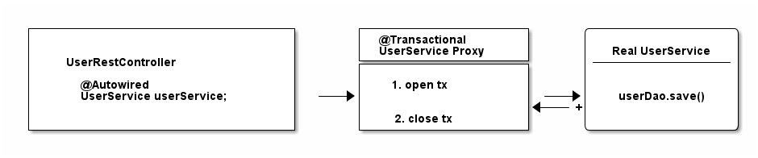

Spring事务管理¶
https://www.marcobehler.com/guides/spring-transaction-management-transactional-in-depth#transactional-spring-boot
1. JDBC事务管理¶
Spring的事务管理都基于此。
1.1. 基本创建、提交、回滚事务¶
import java.sql.Connection;
Connection connection = dataSource.getConnection(); // 1
try (connection) {
connection.setAutoCommit(fasle); // 2
// 执行SQL语句
connection.commit(); // 3
} catch (SQLException e) {
connection.rollback(); // 4
}
1、获取跟数据库的连接。
2、setAutoCommit() 开启事务（唯一方式）。入参为 true 时，每条SQL语句都会有自己的事务，false 反之。
3、提交事务。
4、 出现异常，回滚事务。
HikariCP 等连接池可能会自动切换到自动提交模式
1.2. 隔离级别和保存点¶
import java.sql.Connection;
// isolation = TransactionDefinition.ISOLATION_READ_UNCOMMITED
connection.setTransactionIsolation(Connection.TRANSACTION_READ_UNCOMMITTED); // 1
// propagation=TransactionDefinition.NESTED
Savepoint savePoint = connection.setSavePint(); // 2
...
connection.rollback(savePoint);
1、在数据库连接上设置隔离级别。
2、嵌套事务直接使用的是数据库的保存点。
2. Spring事务管理¶
Spring Core 负责管理事务。Spring MVC 和 Spring boot 中的事务管理方式一模一样。
Spring事务管理的核心就是如何创建、提交、回滚 JDBC 事务。
2.1. 编程式事务管理（Programmatically）¶
通过 TransactionTemplate 实例，或直接通过 PlatformTansactionManager。
@Service
public class UserService {
@Autowired
private TransactionTemplate template;
public Long registerUser(User user) {
Long id = template.execute(status -> {
// 插入User SQL，返回自动生成的id;
return id;
});
}
}
相较于直接操作JDBC事务，这种方式有以下特点：
- 无需手动处理数据库连接，使用 TransactionCallback 封装业务逻辑；
- 无需捕获 SQLExceptions 异常，会自动转换成运行时异常；
- TransactionTemplate 内部使用 TransactionManager接口（封装事务提交、回滚，查看状态的方法），里面再使用一个数据源，这些都是声明在 Spring context 中的 bean。
- 推荐在命令式编程中使用。
2.2 声明式事务管理（Declarative）¶
2.2.1. 在 XML 中声明¶
<!-- the transactional advice (what 'happens'; see the <aop:advisor/> bean below) -->
<tx:advice id="txAdvice" transaction-manager="txManager">
<!-- the transactional semantics... -->
<tx:attributes>
<!-- all methods starting with 'get' are read-only -->
<tx:method name="get*" read-only="true"/>
<!-- other methods use the default transaction settings (see below) -->
<tx:method name="*"/>
</tx:attributes>
</tx:advice>
上述代码块指定了一个事务的 AOP advice，之前的 UserService bean 可以这样声明：
<aop:config>
<aop:pointcut id="userServiceOperation" expression="execution(* x.y.service.UserService.*(..))"/>
<aop:advisor advice-ref="txAdvice" pointcut-ref="userServiceOperation"/>
</aop:config>
<bean id="userService" class="x.y.service.UserService"/>
public class UserService {
public Long registerUser(User user) {
// 插入User SQL，返回自动生成的id;
return id;
}
}
2.2.2. 使用 @Transactional 注解声明¶
无需冗长的XML：
public class UserService {
@Transactional
public Long registerUser(User user) {
// 插入User SQL，返回自动生成的id;
return id;
}
}
使用注解声明式事务，需要以下操作：
- 配置包含 @EnableTransactionManagement 注解。（Spring boot 自动完成）
- 在配置中指定 transaction manager。
@Configration
@EnableTransactionManagement
public class MySpingConfig {
@Bean
public PlatformTransactionManager txManager() {
return yourTxManager
}
}
这样，带有 @Transactional 注解的 public 方法都会在事务中执行。

2.2.3. 声明式事务实现¶
基于 Spring 的 AOP 机制：当使用的 bean 中包含 @Transactional 注解（无论类或方法）时，Spring IOC 容器会借助于 Cglib 返回一个原始类的事务代理实例，TransactionInterceptor。

如图，代理类通过 TransactionManager接口 执行开关数据库连接与事务的提交，委派给原始类实例处理真正的业务逻辑。
2.3. TransactionManager接口¶
Spring 提供了 TransactionManager/PlatformTransactionManager 接口，有一些默认的实现，比如JDBC连接的 DataSourceTransactionManager。
@Bean
public DataSource dataSource() {
return new MysqlDataSource();
}
@Bean
public PlatformTransactionManager txManager() {
return new DataSourceTransactionManager(dataSource());
}
如代码所示，TransactionManager 需要一个可以控制事务的 data source。
public class DataSourceTransactionManager implements PlatformTransactionManager {
@Override
protected void doBegin(Object transaction, TransactionDefinition definition) {
Connection newCon = obtainDataSource().getConnection();
// ...
con.setAutoCommit(false);
}
@Override
protected void doCommit(DefaultTransactionStatus status) {
// ...
Connection con = status.getTransaction().getConnectionHolder().getConnection();
try {
con.commit();
} catch (SQLException ex) {
throw new TransactionSystemException("Could not commit JDBC transaction", ex);
}
}
@Override
protected void doRollback(DefaultTransactionStatus status) {
// ...
Connection con = status.getTransaction().getConnectionHolder().getConnection();
try {
con.rollback();
}
catch (SQLException ex) {
throw translateException("JDBC rollback", ex);
}
}
@Override
protected Object doGetTransaction() {
DataSourceTransactionObject txObject = new DataSourceTransactionObject();
txObject.setSavepointAllowed(isNestedTransactionAllowed());
ConnectionHolder conHolder =
(ConnectionHolder) TransactionSynchronizationManager.getResource(obtainDataSource());
txObject.setConnectionHolder(conHolder, false);
return txObject;
}
}
所有的 TransactionManager 都包含 doBegin() 方法来开启事务，doCommit() 方法来提交事务，doRollback() 方法来回滚事务，doGetTransaction() 方法来获取事务状态。
2.4. 物理事务与逻辑事务（事务的传播）¶
假设有两个事务性的类。
@Service
public class UserService {
@Autowired
private InvoiceService invoiceService;
@Transactional
public void invoice() {
invoiceService.createPdf();
// send invoice as email, etc.
}
}
@Service
public class InvoiceService {
@Transactional
public void createPdf() {
// ...
}
}
这个例子中，数据库中只会有一个事务，Spring称之为物理事务（JDBC 事务）。而 UserService 和 InvoiceService 中有2个逻辑事务。
public class InvoiceService {
@Transactional(propagation = Propagation.REQUIRES_NEW)
public void createPdf() {
// ...
}
}
改变 createPdf() 方法的事务传播模式，比如 REQUIRES_NEW，他就需要自己的物理事务了。于是原来的代码会产生2个 connection，2个trancations（2个完整的 JDBC 事务）。
不同的事务传播模式对应的 JDBC 操作： + Required：需要事务，没有则创建 -> getConnection(). setAutocommit(false). commit(). + Supports：加入外层事务，没有也不创建 -> nothing + Mandatory：加入外层事务，没有则报错 -> nothing + Requires_new：需要新的事务 -> getConnection(). setAutocommit(false). commit(). + Not_Supported：不需要事务，等待外层事务结束 -> nothing + Never：不需要事务，外层有事务则报错 -> nothing + Nested：外层事务的嵌套事务，如果没有则创建 -> connection.setSavepoint()
2.5. TransactionSynchronizationManager 类¶
使用ThreadLocal来为不同的事务线程提供独立的资源副本，并且同时维护这些事物的配置属性和运行状态。
public abstract class TransactionSynchronizationManager {
// 线程上下文中保存着[线程池对象：ConnectHolder]的Map对象。线程可以通过该属性获取到同一个Connection对象
private static final ThreadLocal<Map<Object, Object>> resources = new NamedThreadLocal<>("Transactional resources");
// 事务同步器，自定义扩展方法，每个线程都可以注册N个事务同步器
private static final ThreadLocal<Set<TransactionSynchronization>> synchronizations = new NamedThreadLocal<>("Transaction synchronizations");
private static final ThreadLocal<String> currentTransactionName =
new NamedThreadLocal<>("Current transaction name");
private static final ThreadLocal<Boolean> currentTransactionReadOnly =
new NamedThreadLocal<>("Current transaction read-only status");
private static final ThreadLocal<Integer> currentTransactionIsolationLevel =
new NamedThreadLocal<>("Current transaction isolation level");
private static final ThreadLocal<Boolean> actualTransactionActive =
new NamedThreadLocal<>("Actual transaction active");
// 获取连接
@Nullable
public static Object getResource(Object key) {
...
return doGetResource(actualKey);
}
// 将线程（工厂类）与真实连接进行绑定
public static void bindResource(Object key, Object value) throws IllegalStateException {
...
Map<Object, Object> map = resources.get();
// set ThreadLocal Map if none found
if (map == null) {
map = new HashMap<>();
resources.set(map);
}
Object oldValue = map.put(actualKey, value);
...
}
...
}
TransactionManager 在 doBegin() 方法打开事务时会将连接放到 TransactionSynchronizationManager 中与线程绑定，在 doGetTransaction() 方法中取得线程对应的连接。
事物同步的扩展点 TransactionSynchronization。用于事物同步回调的接口，TransactionManager 在 doCommit() 方法完成后会回调 afterCommit()。可用 registerSynchronization 注册到同步管理器中。
public abstract class TransactionSynchronizationAdapter implements TransactionSynchronization, Ordered {
// 事务挂起
public void suspend() {
}
//事务恢复
public void resume() {
}
// 将基础会话刷新到数据存储区（如果适用）
public void flush() {
}
// 在事务提交前触发，此处若发生异常，会导致回滚
public void beforeCommit(boolean readOnly) {
}
// 在beforeCommit之后，commit/rollback之前执行。即使异常，也不会回滚
public void beforeCompletion() {
}
// 事务提交后执行，对数据库的操作并入之前的事务
public void afterCommit() {
}
// 事务提交/回滚执行
public void afterCompletion(int status) {
}
}
2.6. 事务回滚¶
TransactionTemplate 代码：
public <T> T execute(TransactionCallback<T> action) throws TransactionException {
Assert.state(this.transactionManager != null, "No PlatformTransactionManager set");
if (this.transactionManager instanceof CallbackPreferringPlatformTransactionManager) {
return ((CallbackPreferringPlatformTransactionManager) this.transactionManager).execute(this, action);
}
else {
// 1.通过事物管理器开启事物
TransactionStatus status = this.transactionManager.getTransaction(this);
T result;
try {
//2.执行传入的业务逻辑
result = action.doInTransaction(status);
}
catch (RuntimeException | Error ex) {
// Transactional code threw application exception -> rollback
// 出现异常，进行回滚
rollbackOnException(status, ex);
throw ex;
}
catch (Throwable ex) {
// Transactional code threw unexpected exception -> rollback
//// 出现异常，进行回滚
rollbackOnException(status, ex);
throw new UndeclaredThrowableException(ex, "TransactionCallback threw undeclared checked exception");
}
// 执行成功，提交事物
this.transactionManager.commit(status);
return result;
}
}
TransactionInterceptor 代码：
protected void completeTransactionAfterThrowing(@Nullable TransactionInfo txInfo, Throwable ex) {
//省略非关键代码
//判断是否需要回滚
if (txInfo.transactionAttribute != null && txInfo.transactionAttribute.rollbackOn(ex)) {
try {
//执行回滚
txInfo.getTransactionManager().rollback(txInfo.getTransactionStatus());
}
catch (TransactionSystemException ex2) {
ex2.initApplicationException(ex);
throw ex2;
}
catch (RuntimeException | Error ex2) {
throw ex2;
}
}
//省略非关键代码
}
public boolean rollbackOn(Throwable ex) {
// 层级 1：根据"rollbackRules"及当前捕获异常来判断是否需要回滚
RollbackRuleAttribute winner = null;
int deepest = Integer.MAX_VALUE;
if (this.rollbackRules != null) {
for (RollbackRuleAttribute rule : this.rollbackRules) {
// 当前捕获的异常可能是回滚“异常”的继承体系中的“一员”
int depth = rule.getDepth(ex);
if (depth >= 0 && depth < deepest) {
deepest = depth;
winner = rule;
}
}
}
// 层级 2：调用父类的 rollbackOn 方法来决策是否需要 rollback
if (winner == null) {
return super.rollbackOn(ex);
}
return !(winner instanceof NoRollbackRuleAttribute);
}
public boolean rollbackOn(Throwable ex) {
return (ex instanceof RuntimeException || ex instanceof Error);
}
可知，编程式的事务可以在任何异常类型中回滚，而声明式的事务默认情况下只有 RuntimeException 和 Error 回滚。
2.7. 事务隔离级别¶
JDBC实现：
事务期间切换隔离级别？须看JDBC和数据库是否支持
2.8. 事务易错点¶
调用同一个类中的方法¶
@Service
public class UserService {
// //self-injection
// @AutoWire
// UserService userService
@Transactional
public void invoice() {
createPdf();
// send invoice as email, etc.
}
@Transactional(propagation = Propagation.REQUIRES_NEW)
public void createPdf() {
// ...
}
}
两个方法在同一个类中时，只有一个事务代理实例，事务只开一次。
可通过 self-injection 绕开限制
3. 总结¶

4. 思考题¶
1、Hibernate/JPA 等 ORM 也有自己的事务实现，此时如何实现 Spring 事务管理的兼容？
public class UserService {
@Autowired
private SessionFactory sessionFactory;
public void registerUser(User user) {
Session session = sessionFactory.openSession();
session.beginTransaction();
session.save(user);
session.getTransaction().commit();
session.close();
}
}
2、试想可以实现在一个事务中操作多个或多种类型的数据库吗？
3、设计一个事务成功提交后才会发送 Kafka 消息的 publisher。